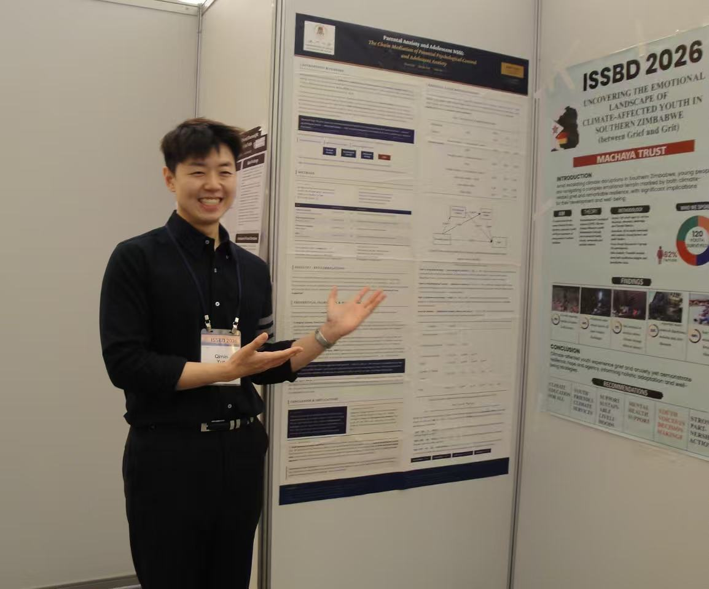
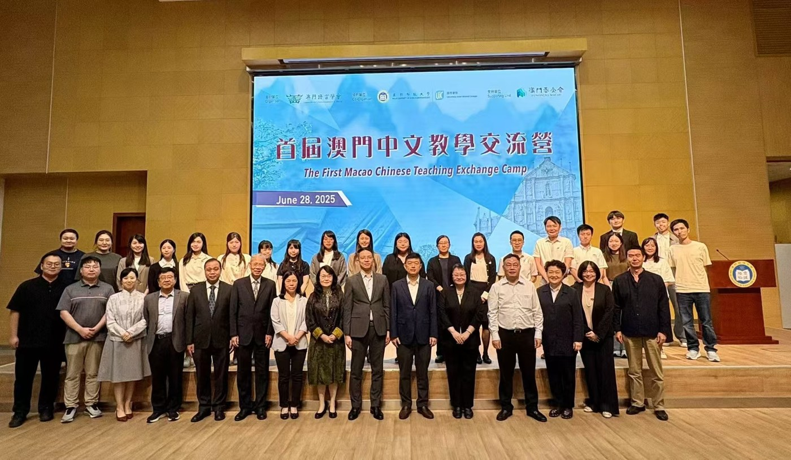
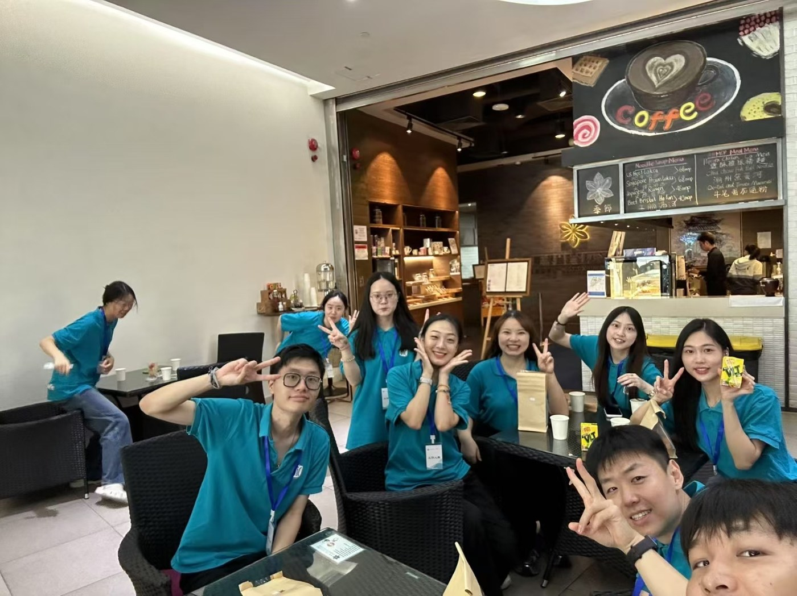
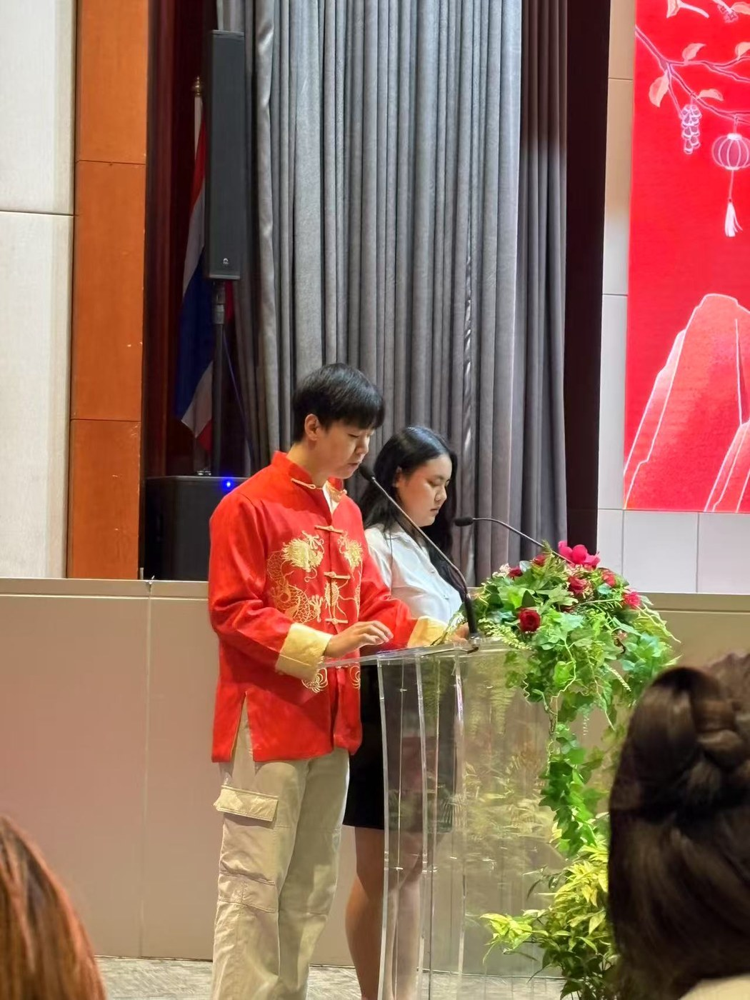
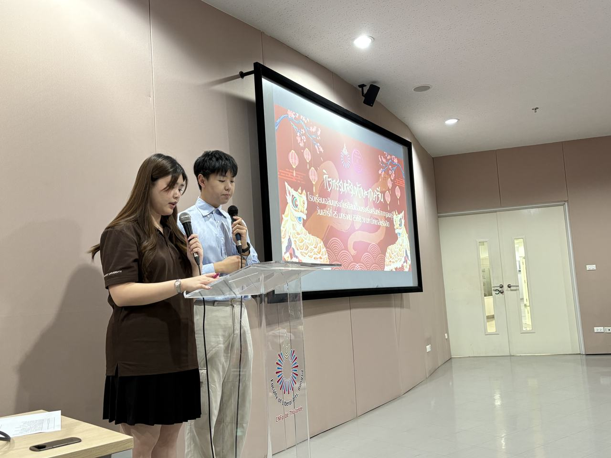
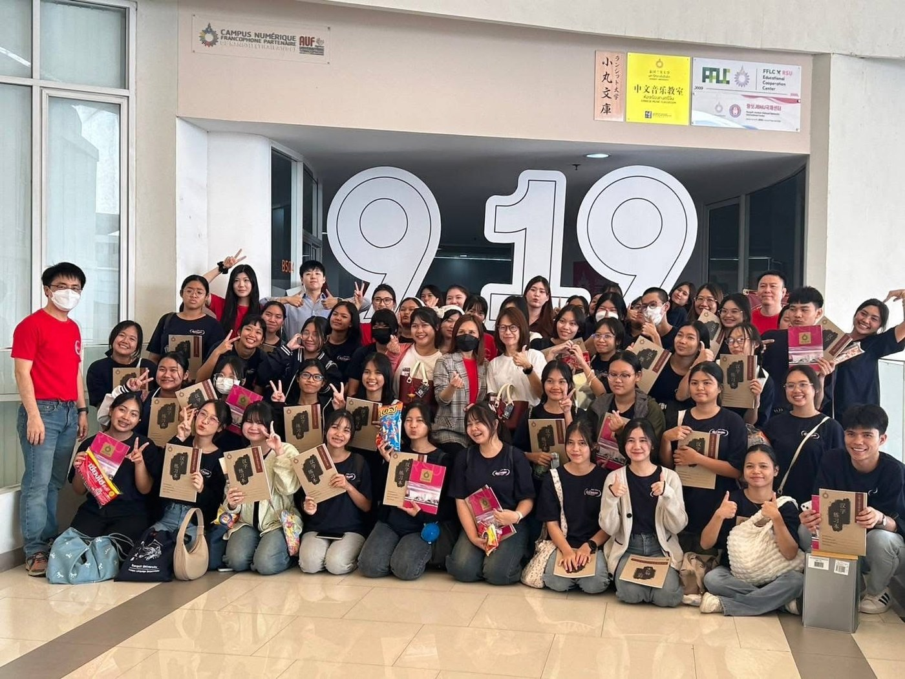
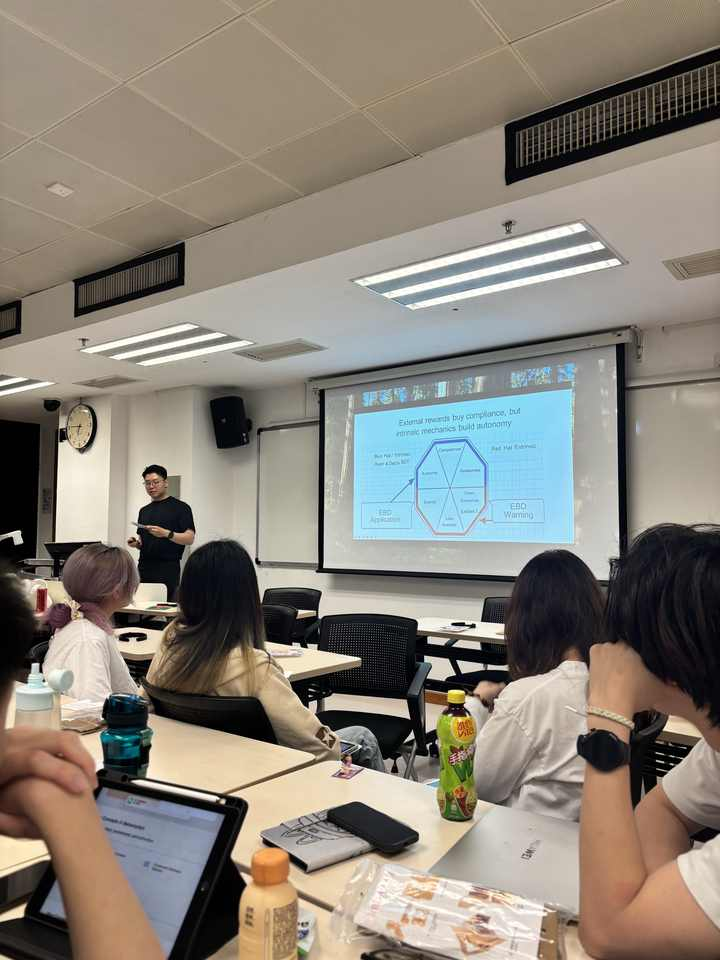
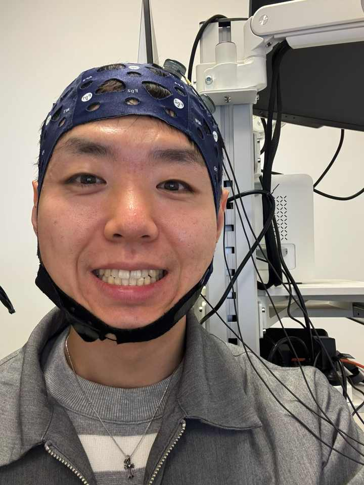
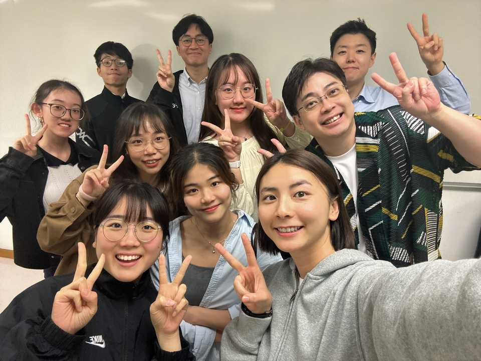

Understanding development across family, culture, and learning.
I'm an MPhil student in Educational Psychology at the University of Macau. My current work examines parenting and filial beliefs in their cultural context, and family and school experiences across adolescence. I also work on psychological measurement and language, drawing on my background in psychology and Chinese-language teaching.
University of MacauFaculty of Education · MPhil, Educational Psychology
About
2025–
MPhil · Educational Psychology
University of Macau
2023–2025
MA · Teaching Chinese as a Foreign Language
Macau University of Science and Technology
Outstanding Master's Thesis Award
2018–2022
BSc · Applied Psychology
South-Central Minzu University (formerly South-Central University for Nationalities)
Research
Current MPhil research
MPhil thesis
In progress · Ethics approval obtained
Rice-farming heritage, parenting, and dual filial piety
My MPhil thesis examines how regional agricultural heritage and parenting practices relate to young adults’ reciprocal and authoritarian filial beliefs.
Research design: The study plans to combine regional parenting indicators constructed from the China Family Panel Studies (CFPS) with individual survey measures of family experiences and filial beliefs. It distinguishes regional context from personal family experience and asks whether the two forms of filial piety show different patterns of association.
University of Macau · Cultural & family psychology
MPhil research paper · CFPS–CLPN
In progress · Ethics approval obtained
Family and school experiences across adolescence
How are family academic expectations, school experiences, and depressive symptoms connected over time? This project uses China Family Panel Studies (CFPS) data and a cross-lagged panel network (CLPN) approach to examine associations across survey waves.
Current work: longitudinal data preparation, attention to measurement across waves, and network analysis.
University of Macau · Longitudinal network analysis
Further research & collaborations
Family processes
Parental anxiety and adolescent self-harm
We examined associations among parental anxiety, parental psychological control, adolescent anxiety, and non-suicidal self-injury (NSSI).
My contribution: data analysis, data collection, manuscript submission, and journal correspondence.
Tonal stability and divergence across three generations of a Hohhot Jin family: An acoustic case study
An acoustic case study of tonal stability and divergence within a Hohhot Jin-speaking family across three generations.
Current work: reorganising the speech data and preparing to rewrite the manuscript around this focus.
Manuscript in preparation · Data reorganisation and rewrite
Child development & AI
A conversational agent that asks children how they feel
Can a friendly dialogue agent get young children (3–9) to talk about their mood, friendships and home life, and can what they say be scored reliably? I'm helping build the agent and the question bank behind it, and designing how we'll test whether its questions measure what they claim to.
My contribution: agent development and prompt design; question-bank construction across anxiety, mood, peer and home domains; a validation plan combining exploratory factor analysis, classical test theory and item response theory. Data collection begins after ethics approval.
Shenzhen University · 2026–
Methods · longitudinal data
Linking students' records across survey waves
Long-term school studies lose participants when records don't match across waves. I helped build an AI-assisted workflow that combines matching rules with manual review to link questionnaire records across three or more waves.
My contribution: resolving ambiguous matches, classifying record validity, and producing 500+ linked records.
University of Macau · 2025–
Papers & presentations
Under review
Yun, Q., & Liu, X. (under review). Parental anxiety and adolescent self-harm: The chain mediating role of parental psychological control and adolescent anxiety. Journal of Child and Family Studies.
Manuscript in preparation
Tonal stability and divergence across three generations of a Hohhot Jin family: An acoustic case study. Data reorganisation and manuscript rewrite in preparation.
Thesis
Yun, Q. (2025). Intergenerational differences in tone in the Hohhot dialect of Chinese [Master's thesis, Macau University of Science and Technology]. Outstanding Master's Thesis Award.
Biennial Meeting of the International Society for the Study of Behavioral Development.

Teaching & service
Macau University of Science and Technology · 2023–2025
Graduate Teaching Assistant
I supported undergraduate language courses through classroom assistance, course coordination, and communication between students and instructors. I helped students with coursework during instructors’ office hours and supported assignment collection, examination arrangements, and classroom preparation.
Academic service
As an organising committee member for the 15th International Symposium on Chinese Language Teaching, I contributed to the conference handbook and the moderation and coordination of main and parallel sessions. I also helped organise the First Macao Chinese Teaching Exchange Camp in June 2025.

First Macao Chinese Teaching Exchange Camp · June 2025

With the conference support team.
Rangsit University · Bangkok · Jan–Apr 2025
Intern Lecturer in Chinese
I independently designed and delivered 20 contact hours of Chinese teaching per week across four classes of approximately 50 students each. My responsibilities included lesson planning, classroom teaching, assessment design, and calculating final grades.
I taught Advanced Chinese Listening and Speaking, Introduction to Business Chinese, and Language and Culture, using role plays, group tasks, and simulations to connect language learning with practical situations.



Work and cultural activities during my time in Thailand.
Preparing for doctoral teaching
Together, these experiences provide a practical foundation for teaching assistantships during doctoral study, including student support, course coordination, assessment, and managing concurrent teaching responsibilities.
Academic life

Class presentation on motivation and autonomy.

Trying an EEG cap in the lab.

With classmates.
Outside the lab
Improving mental health, physical health, and performance.
Outside of research, I enjoy staying active and travelling. Maintaining my health has been a consistent priority for around a decade. I see these habits as a foundation for sustained energy and focus, helping me maintain a manageable rhythm across research, teaching, and longer-term projects.